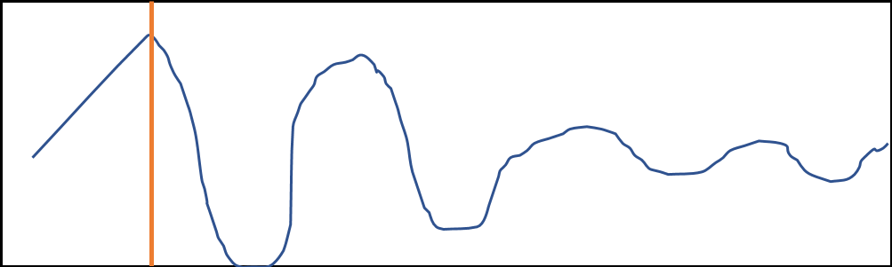

|
|
home | info | tides | map |
|---|
Most dinosaur footprints are only visible at extreme low tide conditions. WARNING: be aware of tidal movements and do not endanger yourself or your vehicle |
| This subpage is under development. In the meantime, please follow this link to assess current tide conditions. |
|  |